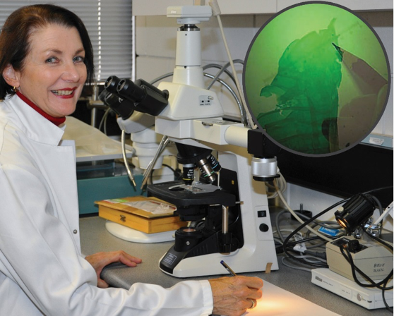
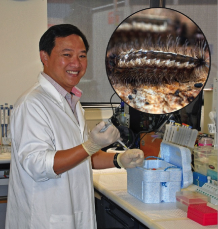
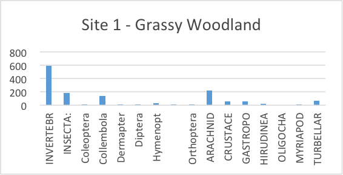
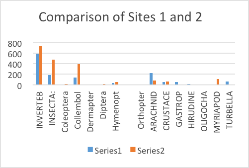
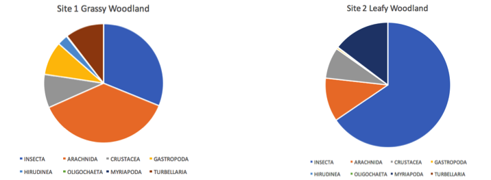

Learn about the process of conducting fieldwork through and interview with Dr. Anneke Veenstra and a case study of recent macro-invertbrate research (and checkout the suggested learning tasks at the bottom of the page).
Video Guide
Part 1 - Introduction
An introduction to Deakin University biological scientist Dr Anneke Veenstra is followed by a description of her research work in the invertebrate ecology; specifically, that of the Gardiner’s Creek Reserve in Burwood, Victoria, Australia. Google Earth is used to provide a “fly in” view of the inner urban location of the Reserve.
Part 2 - The need for the research
Dr Veenstra explains that there is little known about the insects that live in urban environments. There is a need for scientific research to identify the different species presently living in the environment; including their numbers and distribution. Changes can then be monitored. Such knowledge is invaluable for making informed management decisions aimed at ensuring the ongoing health of the ecosystem.
Part 3 – How was the research conducted
Research usually begins with a question and perhaps an associated hypothesis. The research question will establish the data to be collected. Dr Veenstra explains that before collecting any data in a public park, it is essential to gain permission from management authorities.
Part 4 – Preparation
Dr Veenstra explains that fieldwork involves making many decisions about what data is to be collected as well as where and how it will be collected. A preliminary visit to the site is needed so that important characteristics can be ascertained; including the types and distribution of vegetation, likely locations for pitfall traps to collect invertebrate specimens and possible positioning of environmental data loggers. Photographing the site provides a record of data collection locations.
Part 5 - Recording data
In invertebrate studies, the individuals that fall into each pitfall trap are counted and identified. Dr Veenstra explains that a reference collection is created where there are a large number of different species that have not been identified and that are hard to classify to the level of family or species. Records are kept so that similar future pitfall trap data can be compared to see what changes in populations, diversity and distribution of species have occurred over time.
Part 6 – Discoveries
Gardner’s Creek Reserve is highly impacted by human activity. Nevertheless, as Dr Veenstra explains, to her amazement there is a remarkable diversity of invertebrate species living in the reserve. With little previous research on invertebrates in this urban area, careful data collection and analysis has led to discoveries of the presence of species not previously known to exist in this location, as well as the discovery of a previously unknown species. Because invertebrates are at the bottom of the food chain, changes in their numbers affect other species. Knowledge about invertebrate species abundance and distribution provide useful information for future management decisions.
Part 7 - How can the research be used
Dr Veenstra explains that the local council has shown an interest in the findings of her research. The research can provide information about whether revegetation and preserving some areas by fencing them off is having an impact on enhancing the health of the ecosystem.
Part 8 – Presenting your findings
Research findings need to be communicated appropriately, Dr. Veenstra argues. Importantly they need to be communicated in ways that are appropriate for different target audiences. Using graphs rather than tables of data, common names or images of species, rather than scientific names, can make the findings of the research accessible for an audience of non-scientists.
Part 9 - The challenge of conducting research out in the field
In this part, Dr. Veenstra shares some tips for addressing the various challenges confronting the field research worker. Weather, people, and animals can interfere with or destroy the data being collected in pitfall traps, and precautions need to be taken to minimise these problems. It is essential to have contingency plans.
While in the field it is important to record as much as possible in your field notebook and to photograph locations, as well as animal and plant specimens observed. Using these records, it will be possible to return to the same sites used before and to spot changes that may have occurred.
Part 10 - Things to look out for
Further tips about careful preparation are provided by Dr Veenstra in this part. She explains that attention to simple things, such as careful labelling is essential, so that the locations at which specimens have been collected are not forgotten, and invaluable data is not lost. Thorough preparation, together with meticulous and detailed recording of data are essential for successful fieldwork.
Part - 11 Assistance, Guides and Resources
Suggestions of resources for help with invertebrate studies is provided in this part. The CSIRO provides online keys for invertebrates. An invertebrate collection manual is also available online. Using these resources it is possible for anyone to conduct their own studies and compare them with those done by scientists.
Part - 12 Sharing the Research
Dr Veenstra encourages anyone who collects data on invertebrate biology to publish it. If not in print then online. This way others can build on the research that has been done. There is too much work for a few scientists to do, says Dr Veenstra, but if many people use the same techniques to collect data and this data is published, analysis of the combined data can give valuable scientific insights. As well as publishing successes, it is important to share experiences of failures and difficulties that might help others more successfully carry out their fieldwork.
Part 13 - Where to next and Inspiration
In this final part, Dr Veenstra shares her passion for science and invertebrate biology. There is so much still to be discovered, she explains. This provides the fieldwork researcher with abundant opportunities to make their own scientific discoveries, such as describing and naming invertebrate species that have never been recorded before.
Meet the scientists

Dr Anneke Veenstra
About Anneke's research
My current research interest is the taxonomy, phylogeny and ecology of previously undescribed gall midge species infesting saltmarsh plants and other Australian native vascular plants in collaboration with Dr Peter Kolesik (Bionomics Pty. Ltd). This research has significant practical applications as members of the family Cecidomyiidae are host-plant specific and known to impair the sexual reproduction of native plants. Recent research also includes identification of the fungus that may provide food for developing gall midge larvae, using DNA analysis and histological techniques in collaboration with Dr Teresa Lebel (Senior Mycologist) from the Royal Botanic Gardens, Victoria.
Despite many gall midges existing in Australia comparatively few have been formally described. For formal description the midge’s appearance and biology can be insufficient – DNA analysis is necessary. Worldwide, DNA fingerprinting of Cecidomyiidae is in its infancy with few laboratories using this technique.

Cuong Huynh
About Cuong's research
Penicillate Fauna: Their Taxonomy, Biology and Distribution
Penicillate millipedes are unknown to most people. Many species remain undescribed because they are tiny, often misidentified or simply ignored in surveys of terrestrial invertebrates. Most penicillate millipede species were collected and described at the beginning of the twentieth century. The small size, fragility and rareness of penicillate millipedes in museum collections, has resulted in this group being overlooked and understudied. In conjunction with traditional taxonomy, molecular genetic techniques are powerful tools used to determine the relationship between cryptic species and confirm the identity of a previously undescribed species more rapidly and with greater confidence. Few genetic studies have been carried out on members from the order Polyxenida – my research focuses on their phylogeny as well as their taxonomy and biology.
Suggested learning tasks
In the accompanying video interview with Dr Anneke Veenstra, a fieldwork project being conducted in the Gardiner’s Creek Reserve is described. In this project, a survey of invertebrates in parts of the Reserve was conducted. This data is provided here for teachers to use the in the teaching of content from the Victorian and Australian Science 7 - 10 science or senior Biology Curricula.
The data comprises a count of invertebrate specimens collected in pitfall traps at two locations in the Gardiners Creek Reserve in 2015. The two locations represent two different communities within the Reserve. They are described as Grassy Woodland and Leafy Woodland. The data was collected to serve as a baseline with which to compare future surveys. Changes in diversity over time can be used to inform environmental management decisions.
Teachers may use the data to develop Science Inquiry Skills described in the Victorian Curriculum: specifically Recording and processing and Analysing and evaluating. Alternatively, the data can be used to develop some of the Key Science Skills described under the heading Analyse and evaluate data in the VCE Biology Study Design (2016).
The data also provides a real-world context in which to introduce students to the scientific names of taxa used in the classification and identification of common invertebrates. Thus, addressing the Victorian Curriculum content related to biological classification (VCSSU091). The data could also be used in the teaching of VCE Biology Unit 1 Outcome 2, Organising biodiversity.
Two learning tasks are suggested below; each with a brief overview. Suggested student worksheets for each task are also provided. Teachers may alter the tasks to suit their intended learning outcomes and the needs of their students.
Task 1 – Naming and classifying invertebrates
Curriculum links
This task is designed to develop the Science Understanding related to the Victoria Curriculum content:
classification of biodiversity, past and present, into taxonomic groups based on shared morphological and molecular characteristics, and naming using binomial nomenclature
Raw data (MSExcel 59kb Invertebrate-data-Gardiners-Creek-Reserve.xls) Download
The task
The raw fieldwork data is presented using the scientific names of the taxa, together with some common names. These scientific names are not immediately meaningful to most students. However, having the data presented in this way provides an opportunity and a real-world context for students to engage in the purposeful task or demystifying the information.
To begin to understand the data, students are set the task of finding common names that correspond to the scientific names provided in the spreadsheet. While some of this information is provided in the spreadsheets, it needs to be verified by the students. In completing the task students will incidentally begin to think about classification. This becomes an opportunity for students to learn how morphological similarities are used to classify living organisms.
The data refers to members of a subphylum (Myriapoda). Several classes of invertebrates and several orders of the subclass Pterygota of the class Insecta are included in the data. Students are asked to identify the features that are common to those organisms classified into each class and order in the data. This information is readily available on the internet and is usually accompanied with excellent images. If students are using computers or tablets, they can include images of representatives of each different class and order to illustrate the important features used in classification.
Task 2 – Processing and analysing data
Curriculum links
This task is designed to develop the Science Understanding related to the Victoria Curriculum content: particularly skills related to Recording and processing and Analysing and evaluating.
Construct and use a range of representations including graphs, keys and models to record and summarise data from students’ own investigations and secondary sources, and to represent and analyse patterns and relationships (VCSIS110)
Analysing and evaluating
Use scientific knowledge and findings from investigations to identify relationships, evaluate claims and draw conclusions (VCSIS111)
Analyse and evaluate data, methods and scientific models
process quantitative data using appropriate mathematical relationships and units
organise, present and interpret data using schematic diagrams and flow charts, tables, bar charts, line graphs, ratios, percentages and calculations of mean
Raw data (MSExcel 59kb Invertebrate-data-Gardiners-Creek-Reserve.xls) Download
Simplified data summary (MSWord 77kb Summary-of-field-work-data.docx) Download
The task
Students use the original raw data to manipulate, to simplify and to present in a graphical form themselves. This is an excellent opportunity for students to learn the graphing tools provided in MS Excel. Alternatively, the students may be given the simplified data from which to draw graphs. If students do not have the technology or skills, the graphs can be hand drawn. There are learning advantages in each approach.
Students can construct
separate bar charts showing the relative numbers of each organism.

a combined bar chart that provides a comparison of the numbers of the different invertebrates at each site.

pie charts that show the relative abundance of each type of invertebrate at each site.

Data collected at another time could be represented in these ways. Significant changes in the absolute or relative numbers would be immediately evident.